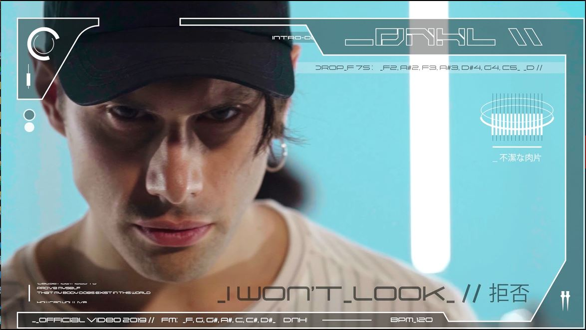
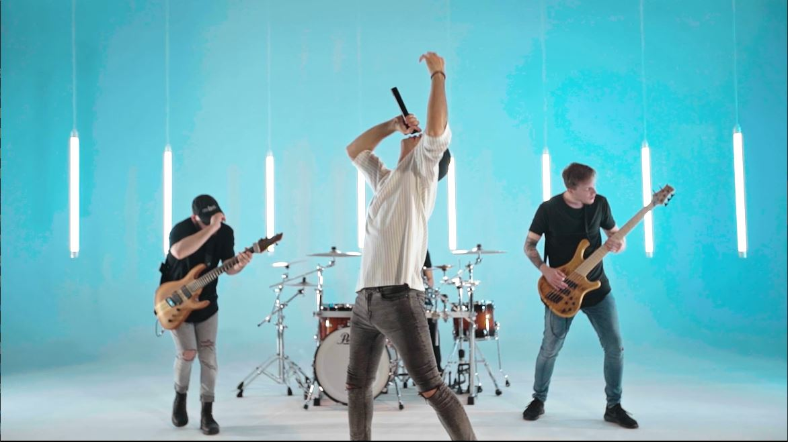
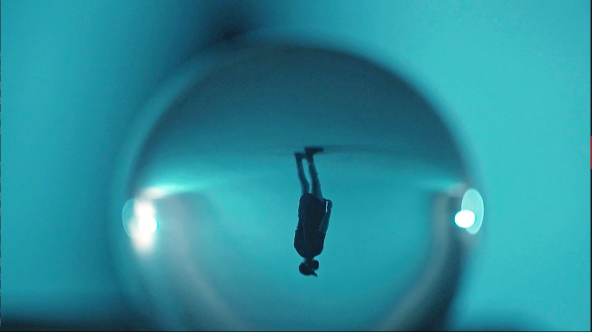
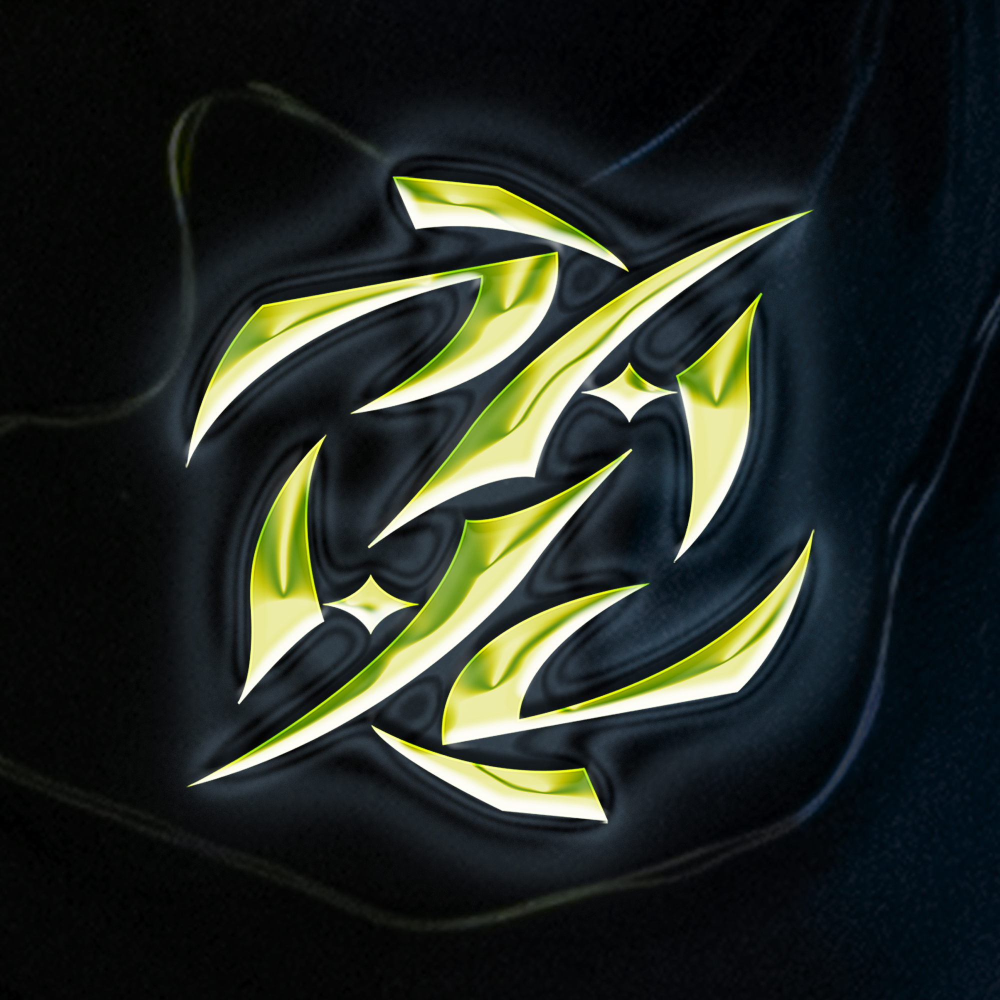
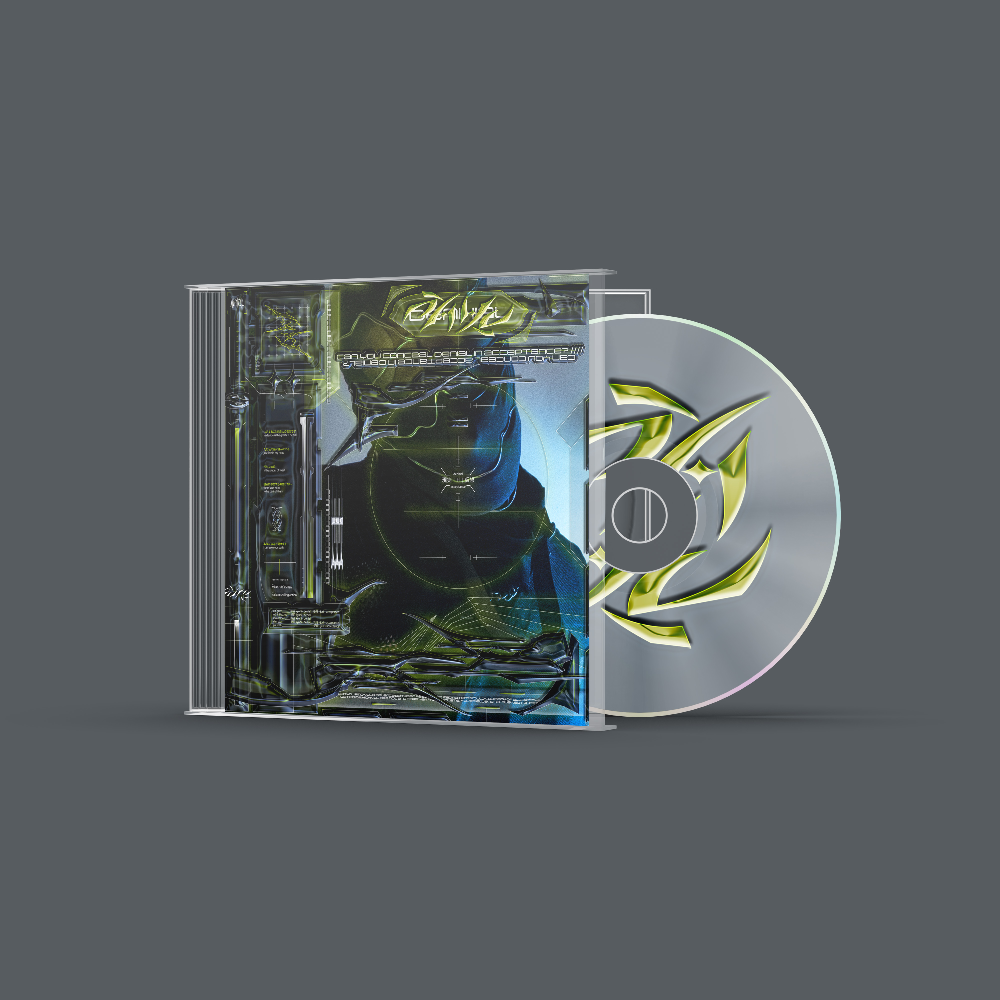
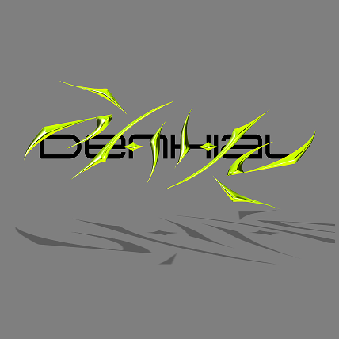
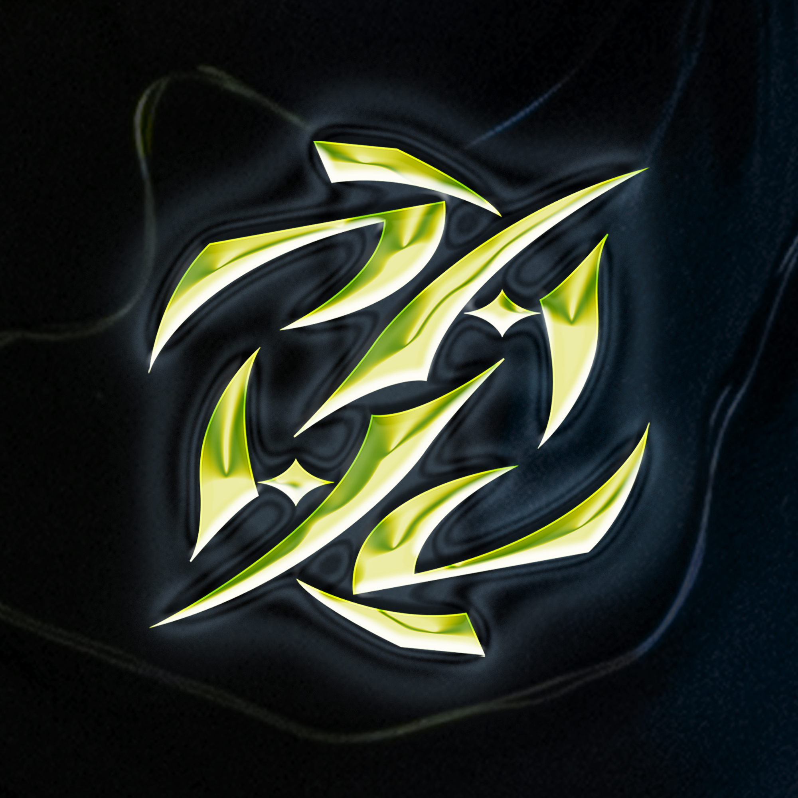
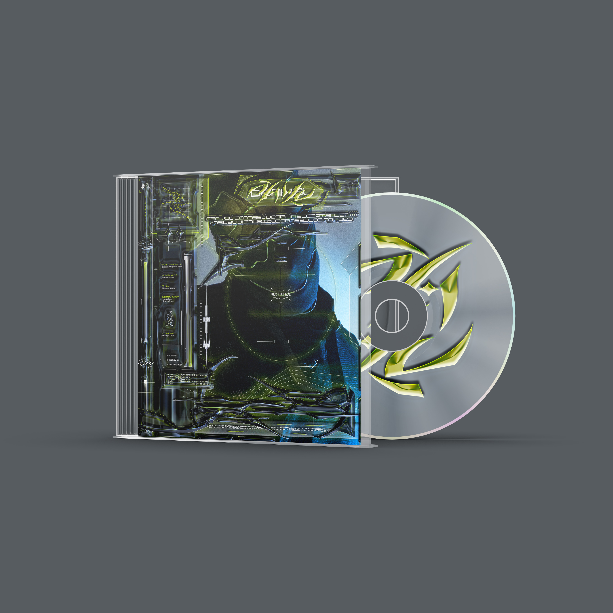
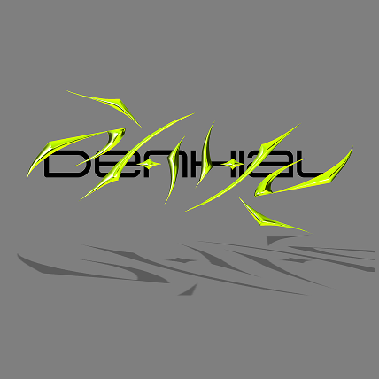

DENHIAL
Art Direction - Video - Identity
La band Denhial nasce a Brescia nel 2015, registrando il singolo "Plesioth". Nel 2016 suonano con Hacktivist a Milano e continuano a registrare nuove canzoni. Negli anni successivi partecipano a numerosi concerti, tra cui quelli con Bad Omens, Traitors e Lotus Eater, fino a esibirsi al festival "We are Deathcore" nel 2018.Art Direction
L’obiettivo è quello di cercare di dare una rappresentazione visuale alla canzone, tramite la coreografia dei membri del gruppo. Tutto ciò è stato realizzato in un ambiente asettico, senza tempo e molto luimnoso per proiettare il tutto in un atmosfera irreale sospesa nel tempo. Tramite l’utilizzo di scene extra in cui i membri del gruppo non suonano si voleva suggerire all’osservatore questa atmosfera più riflessiva e interiore legata ai momenti della canzone più morbidi.

Fotografia
Si è deciso di utilizzare un registro misto di inquadrature, tra larghe e strette per veicolare i vari momenti ritmici e melodici.

Video
Il montaggio è stato eseguito con l’obiettivo di attenersi ai ritmi della canzone seguendo lo spartito della canzone, alterna momenti in cui le scene si susseguono in maniera veloci a momenti più dispersivi. E’ evidente l’uso della post produzione come grafiche applicate e distorsioni visive.


 




